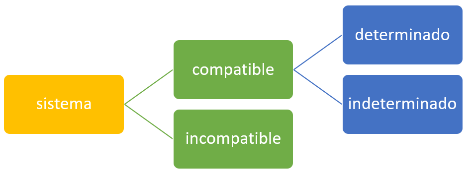

Sistema de Ecuaciones Lineales
Contenido y Ejemplos
Conceptos importantes
Definición: conjunto de ecuaciones lineales dispuestas en un anillo conmutativo. Cada ecuación es de primer grado. A este tipo de estructura matemática/algebraica se le conoce también sistema lineal.
Ejemplo:

Este es un sistema lineal compuesto por 3 ecuaciones. En él existen 3 variables x1, x2, y x3.
Las ecuaciones son:
E1.
\[3x_{1}+2x_{2}+x_{3} = 1\]
E2.
\[2x_{1}+2x_{2}+4x_{3} = -2\]
E3.
\[-x_{1}+\frac{1}{2}x_{2}-x_{3} = 0\]
Todas estas tres ecuaciones son lineales: las variables x1, x2, y x3 todas tienen como grado 1.
Representaciones alternativas
Representación estándar: Un sistema lineal con m ecuaciones lineales y n variables (incógnitas), generalmente se describe en un anillo conmutativo:

Notación matricial de un sistema lineal:

Esta última notación se puede simplificar de la siguiente manera:

A es una matriz que representa todos los coeficientes de las variables. Es una matriz de valores reales (concretos o constantes). x es un vector con m cantidad de variables. Entre la matriz A y el vector x hay un producto matricial que produce el término del lado derecho de la ecuación; ese valor es un vector (b) es conjunto de m valores concretos.
Clasificación de los sistemas lineales
Clasificación:
Los sistemas de ecuaciones lineales se clasifican según el número de soluciones encontradas:

Sistema compatible: el sistema lineal tiene solución. Este clasificación acepta dos subclasificaciones:
- Determinado: Única solución
- Indeterminado: Múltiples o infinitas soluciones
Sistema incompatible: el sistema lineal no tiene soluciones.
El siguiente sistema lineal no es compatible:

No existen valores concretos para x e y que den solución a las dos ecuaciones de forma simultánea (es decir, los valores de las dos variables deben ser los mismo para las dos ecuaciones).
Resolución de sistemas lineales - Método de sustitución
A través del método de sustitución se toma cualquiera de las ecuaciones que integran el sistema lineal y se despeja cualquiera de las incógnitas (variables). Para esta operación selección de ecuación es recomendable tomar la que tenga menor coeficiente.
Una vez realizada la tarea anterior, se procede a sustituir el valor de variable despejada sobre otra ecuación.
Usemos un ejemplo para comprender mejor este método:
Se tiene el sistema:

Hay dos (2) ecuaciones:
E1.
\[3_{x}+2y = 22\]
E2.
\[4x - 3y = -1\]
Despejemos la variable y de la ecuación E1:
\[y = 22 - 3x\]
Ahora, el paso a seguir consiste en sustituir cada coincidencia de la variable y en la ecuación E2:
\[4x - 3(22-3x) = -1\]
Cuando se realice esa sustitución se procede con operaciones algebraicas que permitan conocer el valor de la variable x:
\[4x - 66 + 9x = -1\]
\[13x - 66 = -1\]
\[13x = 65\]
\[x = \frac{65}{13}\]
\[x = 5\]
Hasta este punto, ya sabemos que el valor de la variable x es igual a 5. Este valor ya nos permite obtener el valor concreto para la variable y. Realicemos la sustitución sobre la ecuación E1:
\[3(5) + y = 22\]
\[15 + y = 22\]
\[y = 22 - 15\]
\[y = 7\]
Finalmente tenemos: x = 5, e y = 7 como soluciones al sistema planteado.
También podemos agregar que se trata de un sistema compatible determinado.
Resolución de sistemas lineales - Método de igualación
El método de igualación es similar al método de sustitución; inclusive, se podría decir que es un caso particular. En este método se despeja la misma variable en las ecuación. Luego, se deben igualar los valores obtenidos para encontrar el valor particular de la otra variable.
Sigamos este ejemplo para comprender mejor su uso:
En este sistema se tienen dos ecuaciones:
E1:
\[3_{x} + y = 22\]
E2:
\[4x - 3y = -1\]
Despemos de las ecuaciones E1 y E2 la variable y:

El paso a seguir, igualar los valores de las ecuaciones anteriores para poder encontrar el valor de la variable x:
\[22 - 3x = \frac{4x + 1}{3}\]
\[3(22 - 3x) = 4x + 1\]
\[66 - 9x = 4x + 1\]
\[-9x - 4x = 1 - 66\]
\[-13x = -65\]
\[x = \frac{-65}{-13}\]
\[x = 5\]
Usemos el valor de x = 5, para obtener el valor de y en cualquiera de las dos ecuaciones despejadas:
\[y = 22 - 3(5)\]
\[y = 22 - 15\]
\[y = 7\]
Se han encontrado los valores concretos: x = 5, y = 7. Podemos decir que se trata de un sistema compatible determinado: hay una solución.
Resolución de sistemas lineales - Método de reducción
Consiste en aplicar transformaciones a las ecuaciones que integran el sistema lineal, de tal forma que se logre obtener sobre cualquiera de las variables (incógnitas) un mismo valor para los coeficientes con distintos signos.
Después del proceso anterior se efectúa una suma entre las dos ecuaciones para surpimir cualquiera de las dos variables y poder despejar la variable restante, y en consecuencia obtener su valor particular.
Con el valor obtenido para la variable despejada, se procede a sustituir sobre cualquiera de las dos ecuaciones para obtener el valor de la variable restante.
Veamos a través de un ejemplo este método de resolución de un sistema lineal.

Se tienen las ecuaciones:
E1:
\[2x + 3y = 5\]
E2:
\[5x + 6y = 4\]
Podemos para este caso multiplicar la ecuación E1 por la constante -2; Por lo tanto:
\[-2(2x + 3y = 5)\]
\[-4x - 6y = -10\]
Con esa ecuación E1* modificada podemos aplicar la siguiente operación aritmética entre las dos ecuaciones:

Ya tenemos el valor para la variable x = -6.
Ese valor los podemos usar ese valor de x en la ecuación E2:
\[5(-6) + 6y = 4\]
\[-30 + 6y = 4\]
\[6y = 34\]
\[y = \frac{17}{3}\]
Se ha logrado obtener los valores de las incógnitas del sistema lineal propuesto. Se trata de un sistema compatible determinado.
Obra publicada con Licencia Creative Commons Reconocimiento Compartir igual 4.0